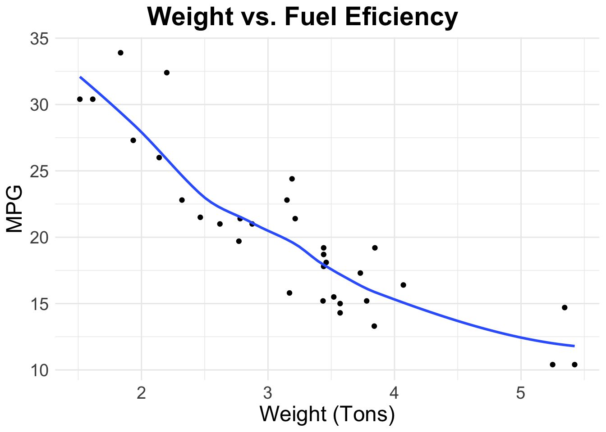
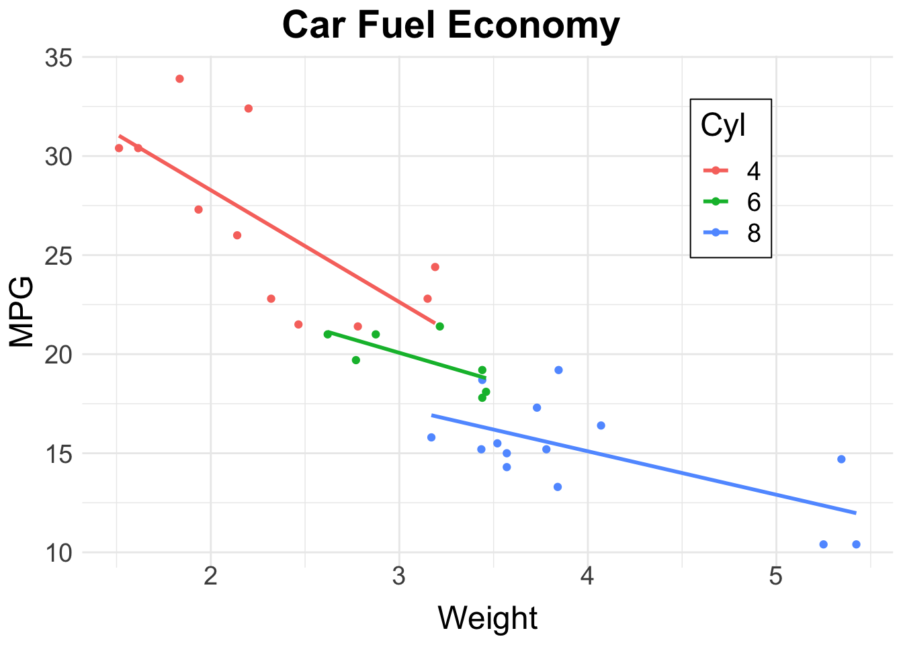
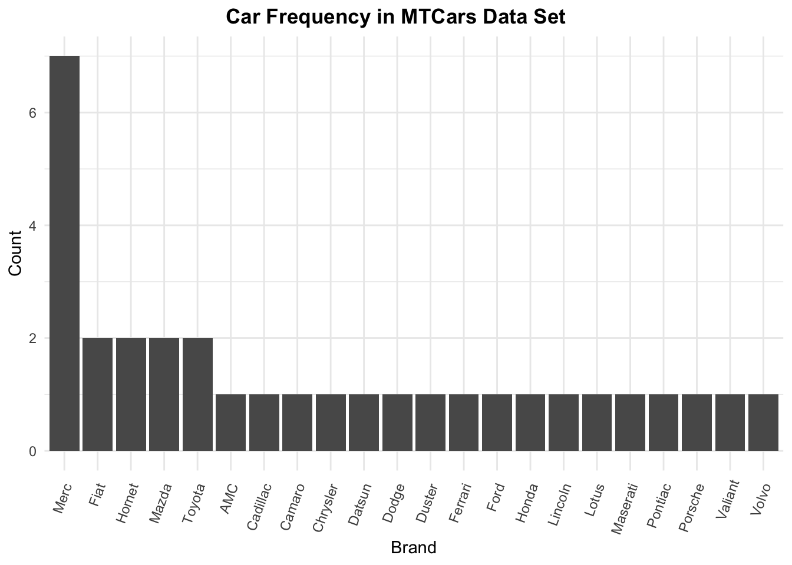
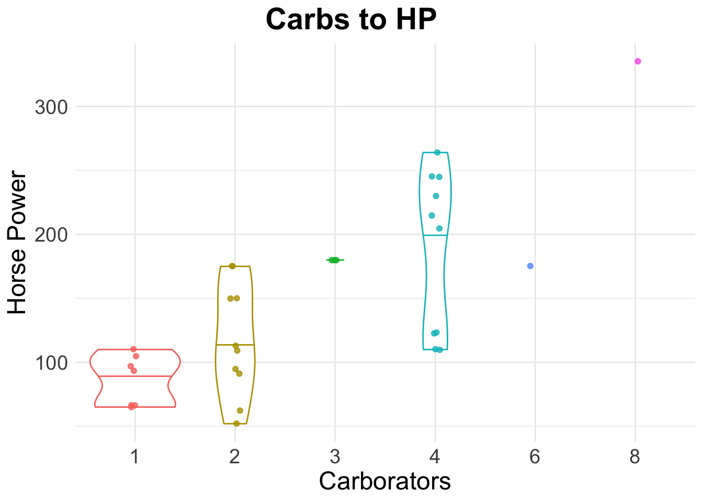

library(tidyverse)
library(reactable)
data <- mtcars %>%
as_tibble(rownames="model")
data %>%
reactable(
defaultPageSize = 5,
striped = TRUE,
defaultColDef = colDef(minWidth = 55),
columns = list(model = colDef(minWidth = 165))
)MT Cars Visualization
Purpose
The purpose of this project is to perform Exploratory Data Analysis on the mtcars data set. I am less curious about searching for / communicating insights, and more-so focused on making good-looking graphs and tables :)
The Data
From the RDocumentation: “The data was extracted from the 1974 Motor Trend US magazine, and comprises fuel consumption and 10 aspects of automobile design and performance for 32 automobiles (1973--74 models).”
Do Heavier Cars Get Less MPG?
data %>%
ggplot(aes(x = wt, y = mpg)) +
geom_point() +
labs(x = "Weight (Tons)", y = "MPG", title = "Weight vs. Fuel Eficiency") +
geom_smooth(method = "loess", se = FALSE) +
theme_minimal() +
theme(text = element_text(size = 18),
plot.title.position = "plot",
plot.title = element_text(hjust = 0.5, face = "bold"))
What if we Incorporate Engine Cylinders?
mtcars %>%
ggplot(aes(x = wt, y = mpg, color = factor(cyl))) +
geom_point() +
geom_smooth(aes(color = factor(cyl)),method = "lm", se = FALSE, alpha = 0.5) +
labs(color = "Cyl", title = "Car Fuel Economy", x = "Weight", y = "MPG") +
theme_minimal() +
theme(text = element_text(size = 18),
plot.title.position = "plot",
plot.title = element_text(hjust = 0.5, face = "bold"),
legend.position = c(0.8,0.76),
legend.box.background = element_rect(fill = "white", color = "black"),
axis.text.x = element_text(vjust = 3),
axis.text.y = element_text(hjust = 1.5))
Comparing Brands
If we wanted to compare brands, a first good step would be to create separate columns for the make and model of a car.
library(stringr)
make_model <- data %>%
mutate(make = ifelse(
is.na(str_locate(model, " ")[,"start"]),
model,
str_sub(model, end = str_locate(model, " ")[,"start"])
))
make_model %>%
count(make) %>%
ggplot(aes(x = reorder(make, -n), y = n)) +
geom_col() +
labs(x = "Brand", y = "Count", title = "Car Frequency in MTCars Data Set") +
theme_minimal() +
theme(axis.text.x = element_text(angle = 70, hjust = 1),
plot.title.position = "plot",
plot.title = element_text(face = "bold", hjust = 0.5))
Are Horse Power and Carborators Independent?
make_model %>%
ggplot(aes(x = factor(carb), y = hp, color = factor(carb))) +
geom_violin(draw_quantiles = 0.5) +
geom_jitter(width = 0.05, alpha = 0.8) +
labs(x = "Carborators", y = "Horse Power", title = "Carbs to HP") +
theme_minimal() +
theme(text = element_text(size = 18),
legend.position = "none",
plot.title.position = "plot",
plot.title = element_text(face = "bold", hjust = 0.5))